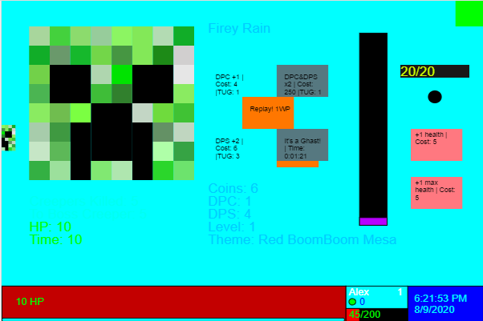

Starting from the Beginning
🗓 August 9, 2020 - 🛈 Backstory - ⏲ 6 min. read - ⬍ 1658 words
Hello, I’m SG, and welcome to my blog! It’s a work in progress, like… well… most of my projects, and it’s going to be improved over time. But I should probably start somewhere.
And if I’m going to start somewhere, I might as well start from the very beginning. So, how did I start programming?
First, I have a bit of explaining to do.

This post's original banner image. Read on to find out which projects these images belonged to...
A List of Events
First Grade: I get a series of tests from a gifted education teacher at my school. They recommend that in
Second Grade: I get moved up one grade for math. I make a presentation to my class about fractions. I fill out chapters in my math textbook ahead of time. My school announces that they’re going to build a new, K-12 school. I get offered to be moved up a grade for all classes. I decline.
Third Grade: I take science and math on a fourth-grade level. My teacher introduces me to Khan Academy, which I use to take a ton of math courses.
In the spring of that year, in anticipation of having a K-12 school next year, I am asked to take a pre-algebra test so I can get placed in a math class. I get 100%.
Fourth Grade: I take Honors Algebra I five years early.
Fourth Grade
Okay, now that you’re caught up, I can start explaining why I started programming.
Once I was in fourth grade, I was subject to two entirely different schedules. One was the standard fourth grade schedule, with over 1 and a half hours each of math, reading, and science/history. The other was the eighth grade schedule, which was more like the standard high school bell schedule; 7 bells, with math getting only one of those bells.
Because of this, I had half the math time that other students in my grade had. So, then, what would I be doing for a bell? I didn’t need the extra time on any other subject, and there was no point in making me do the fourth grade math work - I’d already done it! So it was decided that I would pretty much just sit in class. In other words, I had the equivalent of a study hall years before anyone could ever get one.
That left the delegation of the time to me, and I had pretty much the same problem. The homework generally didn’t take too long, and I had lots of time at home to do it anyways if I wanted. (I didn’t do any clubs or anything.) So I decided to work on Khan Academy - it seemed like a good thing to do.
However, this was about the time that Khan Academy debuted their new course - computer programming with Javascript. And with me having not much else to do, I tried it out.
First thing I saw was a bunch of different user-created games. Me being a fourth-grader whose parents in general didn’t give him a lot of access to games at home, this drew my attention pretty quickly. I’d spend study halls going through the list of games and playing whatever looked good. (I did this for years.)
After this, I decided that it’d be cool if I tried to program myself. So I went through Khan Academy’s initial course. It didn’t take me very long - I had plenty of time to work through it. And once I got the basics down, I started building my first game. Of course, it wasn’t much to look at, or really that much in general. But I was still pretty proud of it. (I later modified it for my grade’s Destination Imagination team project.)
So I kept working on said game and going through the user program list during my study halls. But eventually, one program in particular caught my eye. It was a drawing of a creeper.
A screenshot from one of Khan Academy's videos. Source:
https://www.khanacademy.org/
My Second Program
I was a Minecraft nerd. (Yes, I was, without having any access to the game itself in the first place, but that’s another story.) And after seeing that, I decided that it was going to be in a program. I had to make it into a game.
And after about a week, I had created the first beta of my second game - Creeper Clicker.
In general, it was a clicker game about defeating creepers. Nothing too special. But I decided I was going to make it special.
Months flew by. Years, even. (I had a similar schedule until eighth grade.) And I would keep improving the program. I added different modes, cutscenes, more complex mechanics, themes… And it was all about the general idea of clicking on creepers.
...Yeah.
I would also spin-off (in better programming terms, clone) other people’s projects and look at their inner workings - maybe even edit them a bit. But I mostly worked on the same game.
So how did I get from there to making more advanced games? And how did I get to sharing my own games? (Because one thing’s for sure, that was not getting shared.)
An image of a creeper's face, much like the one that inspired my second project.
A screenshot of the final version of my Creeper Clicker game. Cherish it if you desire, because that's all of it that you're going to get.
Taking Requests
Fast forward four years, to my eighth grade year. After taking two years of choir and avoiding band, I started participating in my school’s drama program.
It was the in-school performance, and I was waiting for my cue, sitting in the hall and working on the same clicker game. I was in the chorus, so I wasn’t really on stage that much.
Then a second-grade kid who was also doing the show, T, walks up to me. (I use only the first letter of people’s names.)
T: What are you doing?
SG: I’m making a game. (I show her a bit of it.)
T: That’s cool! Could you make a game for me?
Well, I wasn’t about to say no to a second-grader. And I had a bit of time anyways. I decided that I might as well.
She wanted to make a match-three game with tigers fighting one another. With pretty much one day to do it, I pulled the first Candy Crush clone I could find, edited it to allow the fighting she wanted, and made some simple graphics of a tiger for her. (She wanted one with wings and multiple tails. She also wanted to call it Tiger War and Death. Yeah… I don’t know either.) I was able to complete it, fortunately, and she was pretty happy with it.
After that, I went back to working on my game. But something had changed. I had realized that people might actually want to see my games. And that I could work on something better than my clicker game.
So I started working on another game. Partially for my science class, it was a game about resource management - trying to survive multiple disasters. But it was something different. A starting point.
The full tiger image that I used for T's game. Yes, those are wings. Yes, those are four tails.
First Release
That summer, I started to play with the idea of an isometric background. I thought 3D was interesting, so I tried making a dodge game using it. It worked, but I didn’t find it that interesting. So I decided to try and make a platformer out of my isometric engine. Very directly, I called it The Platform.
I worked on it over the summer, somewhat, and I worked on it during school sometimes. (I didn’t have as much free time in ninth grade - I had started taking some college classes, which were taking me a while. Plus I didn’t have computer access for weeks.) But I was able to make a lot of progress at a 12-hour “hackathon” at my local college. I saw other people - mostly college students - making some games, so I decided to work on my own.
I came back from the hackathon with a 24-level platformer that had multiple different mechanics, involving playing with gravity and tracking enemies. My parents weren’t happy - they had expected me to work in a team. (That wasn’t happening.) I was.
Over the past year, I had been basically arguing with myself over whether I should post anything of my own. I almost did it a couple of times. But in the end, I had decided against it for mainly one reason - what would I post? I had nothing, or at least nothing I’d be willing to share with the general public. With The Platform, though, I actually had something I could post.
So that November, I decided to finally release my first program. For my profile name, I picked the first name that came to mind, one based on the name of my Clash Royale account - Scholarly Gaming. The program got 100+ votes and it made it to the top of the Hot List. I had found my place in programming.
And that, as they say, is pretty much that. I used my old account to develop games, and I posted them on my main account when I was ready. All in all, I released 7 games in my ninth grade year.
And here I am! After 7 years of programming, this is what I’ve been able to do. Of course, I’ve skipped a couple steps, but again, that’s a story for later.
Thanks for reading this! Hopefully this brings some insight to my point of view.
A screenshot of one of The Platform's 24 levels. The program is still
live, so if you want to check it out, you can do so here:
https://www.khanacademy.org/